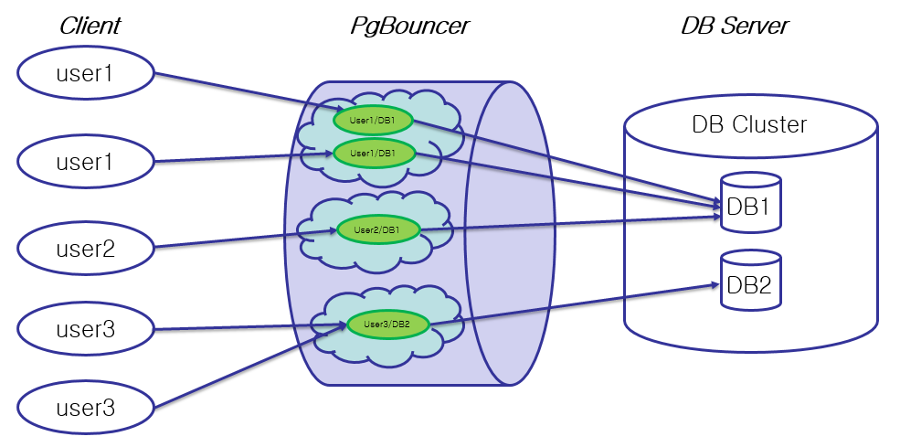

PgBouncer는 Connection Pooling 기능을 제공하기 위한 모듈로써, 다수의 트랜잭션 및 클라이언트의 DB 연결 작업이 필요한 OLTP 환경에서 최적의 리소스 활용 효율을 제공하여 준다. PgBouncer에 대한 자세한 정보는 https://pgbouncer.github.io에서 확인하기 바란다. 다음 그림은 PgBouncer에 대한 개괄적인 아키텍쳐 그림이다. 해당 그림은 PgBouncer 내에 다수의 pool과 각각의 안에 client user명/연결 DB명의 순서쌍으로 명명된 connection들을 지님을 보여 주고 있다.
